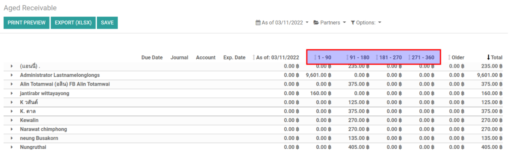
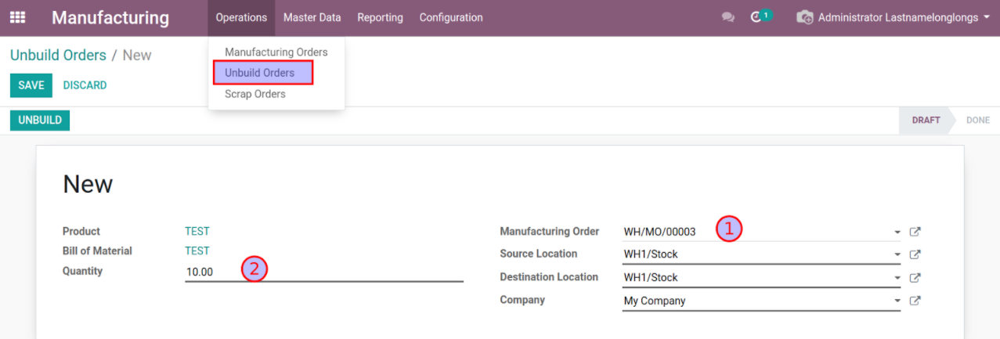

945 Phase 3 (CRs)
945 Phase 3 Change Request Scope
ในเฟสนี้จะเป็นการแก้ไขระบบเพื่อตอบความต้องการเพิ่มเติมเป็นเรื่องๆ แต่ละข้อจะเป็นเอกเทศจากข้ออื่นๆ
ส่งของไปผิดต้องการเลือกของให้ถูกต้องเพื่อให้สต๊อกถูกต้อง
Customer Refund เฉพาะบางบรรทัด
Multi Invoice’s Send & Print สามารถเลือก Printed Form ได้
Work Acceptance & Partner Evaluation
ที่หน้าต่าง Journal Entry อยากให้ระบบช่วย Create Withholding Tax Cert ให้อัตโนมัติ โดยไม่ต้องกดเอง
Import Bank Statement แล้ว ต้องการให้ระบบ Matching ให้ด้วย Date + Amount
Asset Reports ให้มี Filter By: Sell, Disposed
รายงาน Aging AR/AP แบ่ง period ละ 90 ไปจนถึง 360 วัน
Withholding Tax Cert, ต้องการเลือก multi WT Cert แล้วพิมพ์เป้น 1 PDF
Unbuild Manufacturing Order
New “Invoice Readonly” group for customer service users
Sales Order จาก Scrap Location
1. ส่งของไปผิดต้องการเลือกของให้ถูกต้องใน
ในหัวข้อนี้ ไม่ได้มีการปรับแต่งระบบ แต่เป็นการแนะนำการทำงานได้สองวิธี
Return DO เฉพาะบรรทัดที่ผิดพลาด แล้วจึงสร้าง DO ใหม่แบบ manual และเขียน Note อ้างอิงถึงเอกสารที่ผิดพลาด
ใช้วิธีการปรับสต๊อก (Inventory Adjustment)
Note: ทีมสรุปใช้ข้อ (1)
2. Customer Refund เฉพาะบางบรรทัด
Extra addons: account_invoice_refund_line_selection
ที่ Invoice (post, paid)
กดปุ่ม Create Credit Note
เลือกบรรทัดที่ต้องการ Refund
3. Multi Invoice’s Send & Print สามารถเลือก Printed Form ได้
ข้อนี้เป็นการตั้งค่า email template โดยให้เลือก Prined Form ที่ต้องการ
เลือกหลาย Inovice และกดปุ่ม Send & Print
สามารถเลือก Print และ/หรือ Email
เลือก Email Template ที่ต้องการ
ใน Template สามารถตั้งค่าให้ใช้ Printed Form ที่ต้องการได้
4. Work Acceptance & Partner Evaluation
Extra Addons: purchase_work_acceptance, purchase_work_acceptance_evaluation
หลังจากติดตั้ง addons แล้วให้ตั้งค่าเพื่อเปิดใช้งานโมดูล Work Acceptance

เพื่อให้ใช้งานกับกรณี Lot ได้ถูกต้อง ที่ Operation Type คลัง 945: Receipts ให้เซต Pre-filled Detailed Operations
ตั้งค่า Evaluation Criterias

ที่ Purchase Order กดปุ่ม Create WA เพื่อสร้างเอกสารตรวจรับ (ก่อนส่งของหรือวางบิล)

ที่หน้าต่าง WA ให้กรอกจำนวนสินค้าที่ตรวจรับ และกรอกการประเมินตาม Evaluation Criteria แล้วกด Accept
เลือก WA ที่ตรวตรับไปแล้วการการรับของและวางบิล ระบบจะใช้ Quantity ตามที่ตรวจรับ

5. ที่หน้าต่าง Journal Entry อยากให้ระบบช่วย Create Withholding Tax Cert ให้อัตโนมัติ
Extra Addons: sunteen_auto_create_wht_cert
เราสามารถตั้งค่าให้เฉพาะ Posted JE ของบาง Journal เท่านั้นที่มีการสร้าง Auto Create WHT Cert
ตั้งค่า Auto Create WHT Cert ที่ Journal เช่น Wallet Top Upgrade

เมื่อ Post JE ของ Journal ดังกล่าว ระบบจะไปดูที่ Partner’s Withholding Tax เพื่อใช้เป็นค่าในการสร้าง Cert
Note: ถ้าไม่มีการตั้งค่าเริ่มต้นที่ถูกต้องระบบจะไม่มีการสร้าง Cert

6. Import Bank Statement แล้ว ต้องการให้ระบบ Matching ให้ด้วย Date + Amount
Extra Addons: sunteen_payment_move_line_stamp_date
ตั้งค่า Reconcile Models ให้ Partner Is Set & Matches = False (ไม่ต้องการใช้ Partner เพื่อ matching)

ในทุก Payment’s JE, ระบบจะstamp payment date = @dd/mm/yy เพิ่มไว้ที่ Journal Item เพื่อใช้สำหรับการ match Date
เมื่อมีการสร้าง Bank Statement Import, ให้ใส่ Date mm/dd/yyyy ไว้ที่ Label ด้วย
เมื่อมีการ Reconcile ระบบจะสามารถ auto match ด้วย Date + Amount
7. Asset Reports ให้มี Filter By: Sell, Disposed
Extra Addons: asset_report_filter
เมนู Accounting > Reporting > Management > Asset Reports, เพิ่ม Filter ในรายงาน
8. รายงาน Aging AR/AP แบ่ง period ละ 90 ไปจนถึง 360 วัน
Extra Addons: account_aged_balance_90
เมนู Accounting > Reporting > Partner Reports > Aged Receivables / Payable
9. Withholding Tax Cert, เลือก multi WT Cert แล้วพิมพ์เป้น 1 PDF
Extra Addons: l10n_th_withholding_tax_cert_form_sum
เลือก multi WHT Cert แล้วพิมพ์ ระบบจะรวมเงินให้ แต่ WHT Cert จะต้องไม่ปนกัน ถ้าปนกันระบบจะแสดงคำเตือน
10. Unbuild Manufacturing Order
เลือก MO และ Quantity ที่ต้องการ Unbuild เพื่อ Unpack
11. New “Invoice Readonly” group for customer service users
หัวข้อนี้จะเป็นการเพิ่มกลุ่มใหม่ที่ Read Invoice ได้อย่างเดียว
สร้างกลุ่มใหม่ “Invoice Readonly, และเพิ่มสิทธิ์ Objects ตามรูป

เพิ่มเมนู Accounting
เพิ่ม User ที่ต้องการสิทธิ์นี้ (หรือที่หน้าต่าง users)

ผู้ใช้งานจะมีสิทธิ์ View Invoice และ Print Forms เท่านั้น
12. Sales Order จาก Scrap Location
เพื่อให้ Sales Order สามารถเลือกได้ว่าจะส่งของออกจาก Scrap Location (new route) เราจะต้องตั้งค่า Route ใหม่ให้ระบบ
เปิดการใช้งาน Inventory Routing

เมนู Inventory > Configurations > WH Management > Routes, สร้าง Route ใหม่โดยการ Copy จาก Route เดิม
ตั้งค่า route ใหม่โดยใช้ Source Location = Scrap
เลือก Sales Order Lines = True เพื่อเปิด Option นี้สำหรับ Sales Order
เลือก Source Location = Scrap Location เพื่อให้ส่งของออก

เมื่อใช้งาน Sales Order ระบบจะมีให้เลือก Route และเมื่อ Delivery Order สร้าง จะส่งของจาก Scrap Location